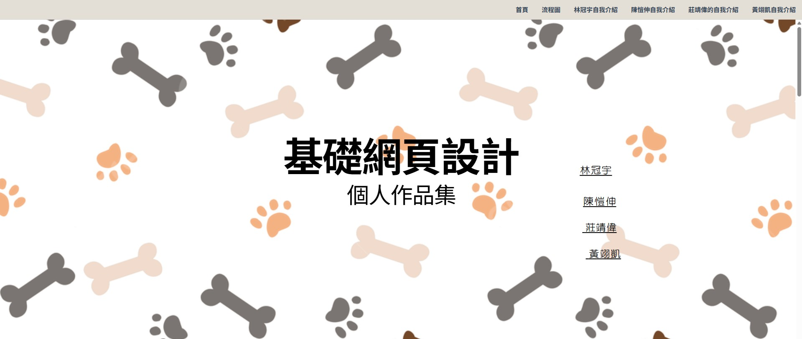
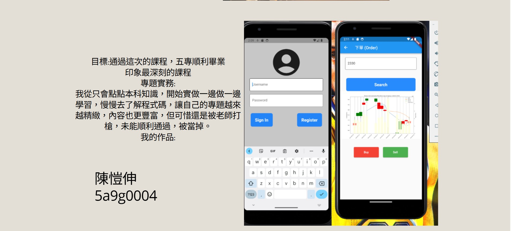
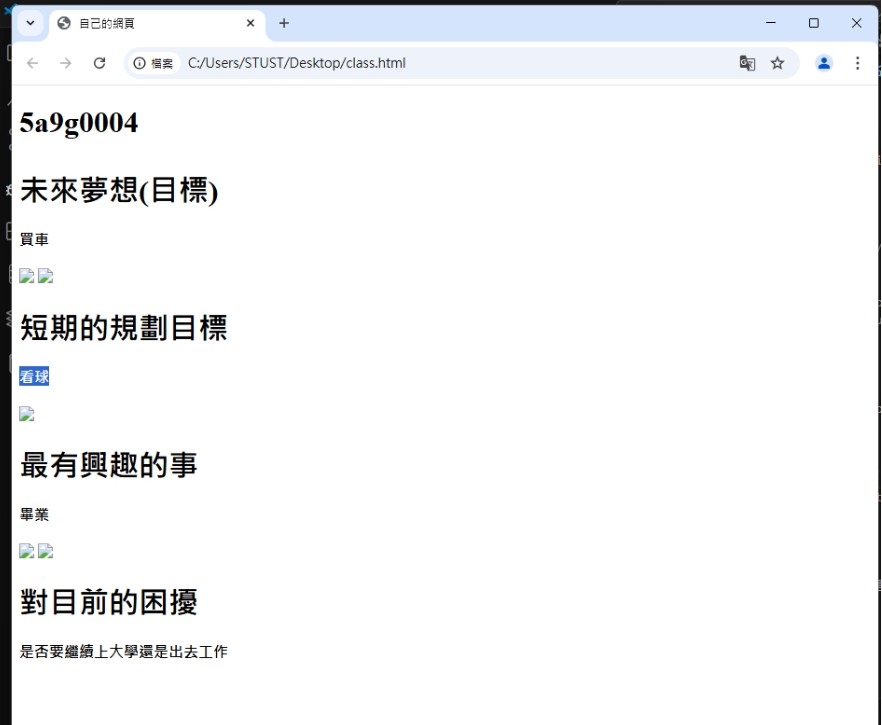

剛開始接觸 HTML 和 CSS 的時候，其實有點迷惘，不太清楚每一個標籤的用途。像是我一開始把 <div> 和 <section> 搞混，常常出現排版錯誤。後來透過反覆試驗、查看瀏覽器的開發者工具，慢慢了解它們的差別。
CSS 一開始也讓我很頭大，尤其是盒模型（Box Model）跟浮動（float）處理。做響應式設計時常常遇到版面跑掉的問題。後來上理解了邊距（margin）與內距（padding）的差別，也開始善用 Flexbox 解決排版問題。
在之前學習這門課時學的也不是到太理想，這次藉由補修的機會讓我在這門課收穫了很多實用的技術。
以下是我在課堂上學習及製作作品的過程截圖：
第一次完成簡單的網頁結構，使用標籤與基本樣式。
這張圖是我在課堂上的第一份作業，(自我介紹)。
期中考試題遇到狀況圖片無法顯示